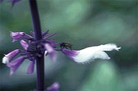
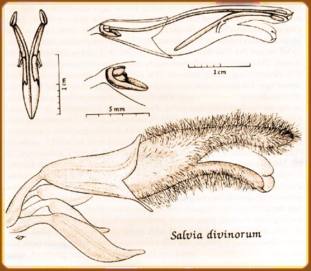

THE BOTANY OF SALVIA DIVINORUM (LABIATAE)Co-Evolved Pollinators Although several flowering populations were finally found during the winter of 1983-84, at no time was a legitimate pollinator observed visiting flowers. While poor flight conditions for Hymenoptera often prevailed, pollinators were also conspicuously absent during an entire, sunny, hot afternoon while flowers were collected near Cerro Quemado. Bumblebees were active in the area, but they ignored the white and violet inflorescences of S. divinorum as they do scarlet flowers of many ornithophilous salvias. The explanation for this behavior is suggested by the dimensions of the S. divinorum corolla, which more resembles those of ornithophilous Salvias than melittophilous ones (Fig. 3). The sigmoid corolla tube is 19-22 mm long, and measures only 2 by 1.5 mm at its narrowest point, near the throat. The lower lip, which is horizontally expanded to form a landing platform on bee flowers, is instead vertically oriented, with the middle lobe somewhat cupped, like those of classical hummingbird pollinated Salvias. The sigmoid curvature of the corolla tube is uncommon in bee flowers, but characterizes several bird pollinated species of Salvia, such as those in sect. Flexuosae Epling.  FIG. 3: a. Flower of Salvia divinorum; b. Diagramatic illustration of flower with contained androecium and pistil; c. Stamen connectives; d. Ovary and gynobase. (Illustration by Lucy Taylor) Data obtained from analyzing nectar constituents are consistent with ornithophily. As might be expected, the nectar sugar is sucrose dominant, as are most nectars from flowers pollinated by long-tongued bees, hawkmoths, or birds. Flowers from clonotypic plants yielded a nectar sugar composed of 86% sucrose, 10% fructose, and 4% glucose. This evidence is even less meaningful in light of the fact that the Labiatae, as a group, are characterized by sucrose-rich or sucrose-dominant nectar sugars (Baker & Baker 1983). While the corolla tube of S. divinorum suggests a co-evolved pollinator with long mouthparts, information concerning nectar sugar concentration and the volume of nectar secreted can help resolve further the identity of this long-tongued pollinator. Nectars sampled by Cruden et al. (1981) from a spectrum of Mexican plants below 2400 m showed that bee flowers produce more concentrated nectars (34.7%) than hawkmoth- (22.6%) and bird-pollinated (23.8%) flowers. The concentration of nectar sugar produced by greenhouse-grown plants of S. divinorum was mostly between 21% and 23%. In general, hummingbird flowers have low nectar-sugar concentrations, but produce larger total quantities of nectar than bee flowers. Because of the interplay between pollinator adaptation, on the one hand, and the constraints of phylogenetic relationship, on the other (Baker & Baker 1983), data presented by Cruden et al. (1981) from several species of Salvia are especially useful for comparison with data obtained from S. divinorum. Ornithophilous species of Salvia sampled by Cruden et al. included S. cardinalis (17.71 Êl per flower), S. elegans (7.52 Êl), S. greggi (3.49 Êl), and S. pubescens (20.72 Êl). Melittophilous species sampled included S. tiliaefolia (.015 Êl per flower), S. reflexa (.14 Êl), and S. cohuilensis (.53 Êl). Despite the fact that nectar accumulation data obtained by intermittently sampling flowers of S. divinorum grown in the greenhouse are plagued with inconsistencies, there is no question that the quantity of nectar produced suggests ornithophily, with measurements ranging from 8-16 Êl, most flowers producing a total quantity of nectar near 9 Êl. Still, several questions emerged, such as the possible negative effect of the intrusive sampling technique, the effect of nectar removal on secretion rates, and the effect of the time of secretion on the quantity of nectar produced, since flowering and nectar production were asynchronous. No nocturnal visitors were observed during the overnight stakeout near flowering populations of S. divinorum at Cerro Quemado. Flowers opened asynchronously in the evening or during the night, and nectar production was also initiated asynchronously, mostly during the night. Virtually 3 of every 4 flowers had a hole punctured in the calyx and corolla tube, presumably by nectar robbers, and even many unopened flowers containing little or no nectar were pierced. At the first signs of dawn, under an overcast sky, a single, large hummingbird with a conspicuously decurved bill visited virtually every flower, flitting from flower to flower in an irregular fashion. It flew away in the direction of additional flowering stands of S. divinorum, and several minutes later returned and again visited most flowers. The nectar in most of the flowers was depleted by the bird, and pollen grains had been deposited on several stigmas. Two bumblebees were in the area but ignored the Salvia flowers. The observations described can in no way be considered evidence for the co-evolution between S. divinorum and a species of hummingbird, especially in light of the many supposed melittophilous salvias that are visited by these opportunistic birds (Reisfield 1987). Still, dimensions of the corolla, nectar constituents, and the amount of nectar produced per flower, all suggest the ornithophilous syndrome. On the other hand, anthropogenic distribution, white corolla color, sporadic and infrequent flowering of populations during most of the year, the great amount of nectar robbing, and apparent complete lack of fruit set, suggest the relationship between plant and pollinator has not been "fine-tuned" by natural selection. |